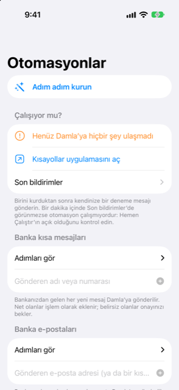

Kılavuz › Otomatik kayıt
Banka kısa mesajları ve e-postalar
Her banka mesajını Damla’ya bir Shortcut ile gönderin.
Bir Shortcut otomasyonu, bankanızdan gelen her yeni kısa mesajı veya e-postayı ulaştığı anda Damla’ya aktarır; böylece harcamalar, iadeler ve gelirler sizin için kaydedilir. Bir seferde bir bankayı bağlarsınız. Damla size adımları tam olarak gösterir ve otomasyonu Shortcuts uygulamasında bir kez siz kurarsınız.

Ne zaman kullanılır
- Bankanız, bir kartta veya hesapta her harcama yaptığınızda, ödeme aldığınızda veya yükleme yaptığınızda kısa mesaj gönderir.
- Bankanız işlem bildirimlerini e-postayla da gönderir ve sizin de bunların kaydedilmesini istiyorsunuz.
- Daha az ödemenin elle girilmesini istiyorsunuz.
- Damla’ya ne gönderildiğini ve her mesajla ne yaptığını gösteren bir kayıt istiyorsunuz.
Damla’nın Shortcuts’ta sunduğu eylemler
Damla’nın dört eylemi, Shortcuts uygulamasında yeni bir eylem eklediğinizde görünür:
- Damla’ya ekle — bir Metin alanı ve bir Kaynak alanı içerir (Kısa mesaj, E-posta veya Wallet ödemesi).
- Damla’ya ekstre ekle — bir ekstre PDF’i veya ekran görüntüsü alır ve inceleme için sıraya koyar.
- Damla’ya kart ödemesi ekle — bir satıcı, bir tutar ve bir kart alır (Apple Pay ve Wallet ödemelerine bakın).
- Ne kadar harcayabilirim — tahmin kodunun hesapladığı, güvenle harcanabilecek tutar tahmininizle yanıt verir.
Damla’daki Otomasyonlar ekranı bu adların aynısını listeler. Shortcuts uygulamasında Add Action’a, sonra Apps’e, sonra Damla’ya dokunarak bulabilirsiniz. Orada biri eksikse Damla’yı açın, Shortcuts uygulamasını zorla kapatın ve yeniden açın. Hâlâ eksikse iPhone’u yeniden başlatın.
Adım adım
Önce Damla’ya bankanızın hangisi olduğunu söyleyin, sonra otomasyonu kurun.
- Damla’yı açın, sonra Ayarlar’a, sonra Banka mesajları ve ekstreler’e, sonra Otomasyonlar (Shortcuts)’a gidin.
- “Banka kısa mesajları” (veya “Banka e-postaları”) bölümüne bankanızın gönderici adını veya numarasını yazın ve Ekle’ye dokunun. E-posta için göndericinin e-posta adresinin bir kısmı yeterlidir.
- Adımları tam olarak görmek için listede bankanızın kaydına dokunun. İşinize gelirse Kopyala düğmelerini kullanın: biri adımları kopyalar, biri Shortcuts uygulamasının Apple Intelligence’ı için bir istem kopyalar, biri de bankanızın gönderici adını kopyalar; böylece hiçbir şey yanlış yazılmaz.
- Shortcuts uygulamasındaki adımları izleyin: Otomasyon’a, sonra artı düğmesine dokunun, sonra Mesaj’ı (veya Email’i) seçin.
- Sender altında bankanızı seçin. Message Contains’i boş bırakın.
- Hemen Çalıştır’ı seçin, sonra İleri’ye dokunun.
- New Blank Automation’ı seçin, Add Action’a dokunun, Damla’ya ekle araması yapın ve onu seçin.
- Metin alanını Kısayol Girdisi olarak ayarlayın; böylece mesajın kendisi aktarılır.
- Kaynak’ı Kısa mesaj (veya E-posta) olarak ayarlayın; böylece Damla nereden geldiğini bilir.
- Done’a dokunun. Görünürse Çalıştırıldığında Bildir seçeneğini kapatın.
Her mesaja ne olur
- Kart veya hesap rakamları hesaplarınızdan biriyle eşleşen, net bir harcama, iade veya gelir hemen bir işlem olarak eklenir.
- Anlaşılmayan bir mesaj, bilinmeyen bir kart, bir taksit dönüştürmesi veya bir ekstre bildirimi Gelen Kutusu’nda tek bir dokunuş bekler. Taahhüt oluşturan hiçbir şey onayınız olmadan eklenmez.
- Bir fatura duyurusu bir işlem değil, beklenen bir fatura olur.
- Tek kullanımlık kodlar yok sayılır ve telefon kilitli olsa bile asla saklanmaz.
- İki kez teslim edilen aynı bildirim bir kez eklenir.
Bilmeniz iyi olur
- Otomasyonu kurduktan sonra kendinize bir test mesajı gönderin. Otomasyonlar ekranında, İşliyor mu? bölümü son banka mesajının ne zaman ulaştığını gösterir ve Son bildirimler yakın bildirimleri, her biri için ne yapıldığını ve nedenini belirterek listeler. Bir dakika içinde hiçbir şey görünmezse otomasyonun Hemen Çalıştır olarak ayarlandığını kontrol edin.
- Kilitli bir telefon kayıtları açamaz. Damla metni saklar ve uygulamayı bir sonraki açışınızda onu ekler.
- Shortcuts uygulamasındaki ifadeler, iPhone’unuzun yazılım sürümüne göre bu adımlardan biraz farklı olabilir. Aranacak adlar Damla’ya ekle, Metin ve Kaynak’tır.
- Reklamlar, limit veya kur bildirimleri ve bankanızın hatırlatıcıları kendi kendine atlanır; bkz. Damla’nın yok saydıkları ve bir bildirimi geri alma.
İlgili
Anlaşılmayan ya da eksik bir şey mi var? support@raveniq.ai adresine yazın ve hangi sayfa olduğunu belirtin.